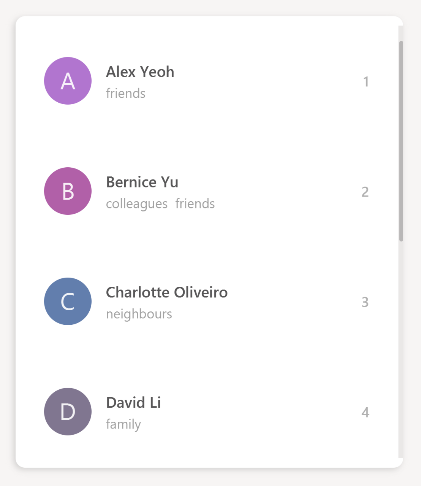
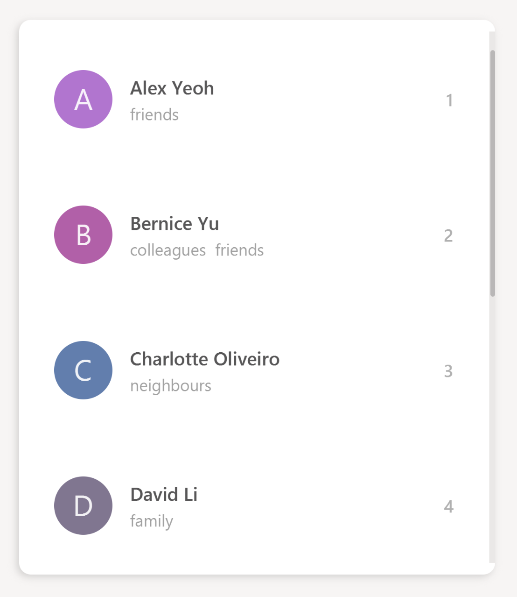
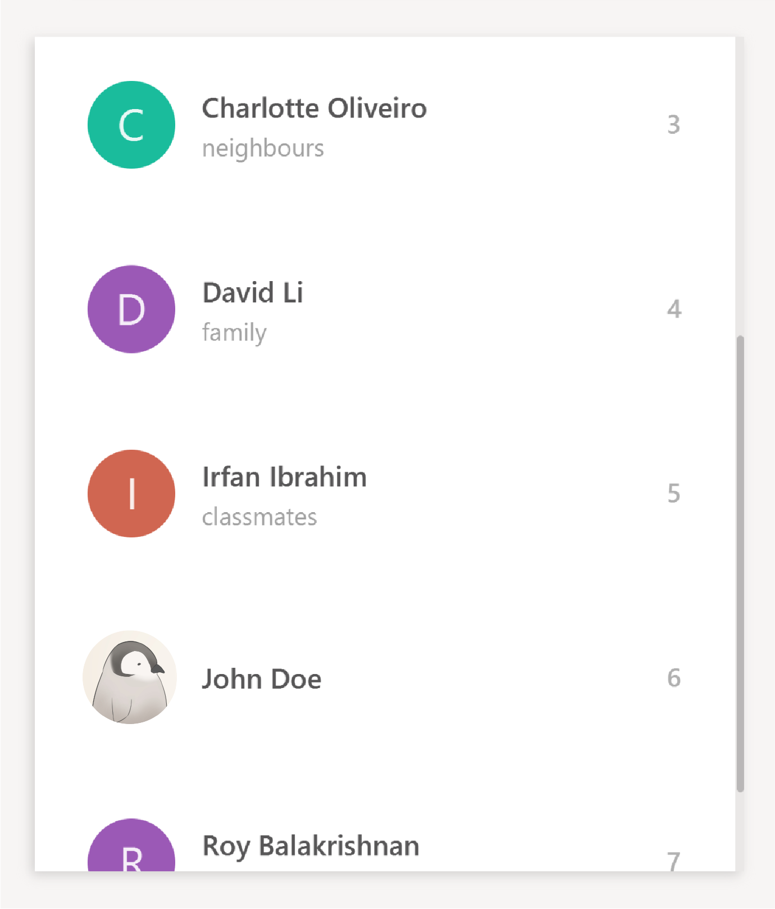

Project: Rolodex
Rolodex is a desktop contact management application for users who prefer working without a mouse to manage their contacts more efficiently. If you are a businessman with a list of clients to remember, a teacher who wants to organize their student information, or anyone with a need for contact management, Rolodex provides you with a way to organize your important contacts in a fast and productive manner.
The user interacts with the application using a CLI (Command Line Interface), and it has a GUI created with JavaFX.
It is written in Java, and has about 10 kLoC.
Code contributed: [Functional code] [Test code]
Enhancement Added: Keyboard Shortcuts
Justification
Having keyboard shortcuts allows the user to navigate around the application with ease and speed.
This implementation should enable you to access all parts of Rolodex without using the mouse.
The table below shows the keyboard shortcuts that have been added, with the exception of shortcuts with the behavior Exit the application
and View help window which came with the original state of the application.
External Behavior
Quick Command Shortcuts (Since v1.2)
| Shortcut | Purpose |
|---|---|
Ctrl+Shift+C |
Clear contact list |
Ctrl+H |
View history |
Ctrl+L |
List all contacts |
Ctrl+Z |
Undo last command |
Ctrl+Y |
Redo last command |
F1 |
View help window |
Navigation/Selection Shortcuts (Since v1.2)
| Shortcut | Purpose |
|---|---|
Enter |
Select the command box |
Esc or Ctrl+← |
Select the contact list panel |
Ctrl+→ |
Select the result display panel |
When the command box is not in selection: |
|
↑ and ↓ |
Scroll the contact list |
Ctrl+D |
Delete the selected contact (Coming in V2.0) |
Alt+F4 |
Exit the application |
Implementation
The keyboard shortcuts mechanism is implemented in the KeyListener class under the UI component of the application.
It listens for key presses done by the user and executes actions mapped to these key presses, or key events.
The mapping of actions to key events are found in the KeyListenerUtil class.
The following class diagram shows the relationship between classes concerning the keyboard shortcuts mechanism.
The KeyListener requires access to the CommandBox, PersonListPanel and ResultDisplay for key event executions,
such as changing the focus node.
When the user launches the application, the UiManager calls mainWindow.setKeyListeners()
which creates the KeyListener class to handle the key events.
In KeyListener, the main method for handling the key events has the following code:
public void handleKeyPress() {
mainNode.addEventFilter(KeyEvent.KEY_PRESSED, event -> {
// actions to execute key event
});
}The mainNode refers to the node containing the all UI components in the application,
and addEventFilter captures key events received by that node. The application will continue to listen
to key presses done by the user once this method is called.
Another common method used for capturing key events is onKeyPressed.
In this case, addEventFilter is used instead as key events captured by the former will be consumed by the TextField used in the application.
addEventFilter captures the key events before they are consumed by the TextField.
|
When the user presses a key combination which matches one that is assigned, a corresponding action will be executed. An example of such an execution is given as shown:
private void executeKeyEvents(KeyEvent keyEvent) {
if (KEY_COMBINATION_FOCUS_PERSON_LIST.match(keyEvent)) {
// action to focus on person list
}
// … more cases
}Where the application focuses on the person list when the user presses a key combination that is assigned to KEY_COMBINATION_FOCUS_PERSON_LIST.
The mapping of KEY_COMBINATION_FOCUS_PERSON_LIST to a key combination can be found in the KeyListenerUtil class.
public class KeyListenerUtil {
public static final KeyCombination KEY_COMBINATION_FOCUS_PERSON_LIST = KeyCombination.valueOf("Esc");
// … more mappings
}In this case, KEY_COMBINATION_FOCUS_PERSON_LIST is mapped to the esc key. As such, a user
pressing the esc key will result in the application focusing on the person list.
Design Considerations
Location of KeyCombination constants for the KeyListener class
Alternative 1 (current choice): KeyCombination constants are stored in a separate utility class, KeyListenerUtil
Pros: Better modularity given that the number of constants is fairly large.
Cons: The constants have to be imported to be used in the KeyListener class.
Alternative 2: Store the constants in the KeyListener class itself
Pros: Straightforward implementation and the constants does not have to be imported.
Cons: Violates Separation of Concerns as the KeyListener class acts as a storage for the constants in addition to handling key events.
The way commands words are executed
Alternative 1 (current choice): Pressing the shortcut automatically executes the command
Pros: Execution of command is faster and more convenient for the user.
Cons: User may want to check what the shortcut does before executing the command.
Alternative 2: Pressing the shortcut replaces the TextField with the command word
Pros: Allows the user to check the command before executing it.
Cons: An extra step for user to execute the command, i.e. pressing Enter.
Enhancement Added: UI Improvements
UI Improvements
The user interface of the application has been revamped to take on a clean design, which aims to improve the user’s experience with Rolodex.

Some improvements made to the UI include the following features:
Randomized Avatars Colors
Avatar colors are randomized and generated over a color range to reduce the chance of two adjacent persons sharing the same avatar color. Some results from using this color generator can be seen from the following screenshots.
 

The generation of avatar colors involves two steps:
-
Randomly pick a default color from
ColorsUtil, which contains a list of selected colors chosen from Google’s material ui color palette. -
Generate a randomized offset value to create a new color which values differ from the default color by this offset.
The code snippet below shows the details of how the color values are manipulated in the color generator.
/**
* Generates a new color with a random offset from {@code Color defaultColor}.
*
* @return The new color in hexadecimal {@code String} format
*/
private static String generateNewColor(Color defaultColor) {
int r = defaultColor.getRed();
int g = defaultColor.getGreen();
int b = defaultColor.getBlue();
int newR = Math.max(COLOR_VALUE_MIN, Math.min(COLOR_VALUE_MAX, (r + generateOffset())));
int newG = Math.max(COLOR_VALUE_MIN, Math.min(COLOR_VALUE_MAX, (g + generateOffset())));
int newB = Math.max(COLOR_VALUE_MIN, Math.min(COLOR_VALUE_MAX, (b + generateOffset())));
return String.format("#%02x%02x%02x", newR, newG, newB);
}An upper bound is applied to the offset to ensure that the new color does not deviate too far from the default color.
Keyboard Icon
A keyboard icon is added in the command box to provide visual feedback for certain user events:
-
: User is idle
-
: User is typing
-
: User entered an invalid command
The keyboard icon is updated by setting ImageView of the icon to one of the three variations as shown above, whichever is appropriate
for the current state of the user.
In particular, to check that the user is idle, we measure the time elapsed since any changes made to the
CommandBox. This is done with the PauseTransition class from JavaFX, which allows us to execute an event after a set duration.
For better illustration, below is a simplified code snippet of the implementation.
private void updateKeyboardIcon() {
// set icon to typing keyboard
pause.setOnFinished(event -> {
// set icon to idle keyboard
});
pause.playFromStart(); // reset timer
}pause is a PauseTransition object, and setOnFinished takes in an event handler as its parameter.
Autoselection for Newly Added/Edited Person
A newly added, or edited person will automatically be selected in the PersonListPanel. This makes it easier for the user to take note
of changes made to their contacts.
This implementation is done by raising an event whenever the add and edit commands are executed.
The PersonListPanel is registered as an event handler and will subsequently scroll to the person that is newly modified.
This feature is integrated with the Person Detail Panel implementation, and more details on the event handling can be found under the section.
Responsive Split Pane
The split pane which separates the contact list from the other UI components is responsive. Its divider is automatically maintained at the optimal position when the window size changes.
This is achieved by setting up listeners to the property of the window. The divider will be repositioned when the listener detects any changes in the window property. The code below illustrates the implementation in greater detail.
private void setSplitPaneDividerPosition() {
// repositions divider when window is just showed
primaryStage.showingProperty().addListener((observable, oldValue, newValue) ->
splitPane.setDividerPositions(SPLIT_PANE_DIVIDER_POSITION));
// repositions divider when window width changes
primaryStage.widthProperty().addListener((observable, oldValue, newValue) ->
splitPane.setDividerPositions(SPLIT_PANE_DIVIDER_POSITION));
}Enhancement Added: Person Detail Panel
Justification
The person detail panel aims to reduce cluttering of information in the contact list. With this panel, the contact list will only have to store the essential information for identifying a person, whilst additional information about the person will be displayed on this panel.
External Behavior
The person detail panel displays the complete information of a person that is selected.


Implementation
The behavior of the panel is mostly event-driven, where the information displayed on the panel changes depending on various user actions, such as a person selection, editing of a person, addition of a person, etc.
For example, the sequence diagram below shows the sequence of events to update the panel display when the user edits a person (the logic aspect of updating the person detail is omitted for brevity).
The information displayed on the panel is extracted from the ReadOnlyPerson that is returned by the EventsCenter.
The details of the implementation can be seen from the following code snippets.
/**
* Shows the details of the person on the panel
*/
private void showPersonDetails(ReadOnlyPerson person) {
setAvatar(person);
setTextFields(person);
setTags(person);
}The showPersonDetails method is called when a PersonEditedEvent is raised, which occurs when the user edits a person.
/**
* Updates the panel when the details of the selected person is changed
*/
@Subscribe
private void handlePersonDetailsChangedEvent(PersonEditedEvent event) {
logger.info(LogsCenter.getEventHandlingLogMessage(event));
showPersonDetails(event.editedPerson);
}The behavior of the panel is summarized in the table below.
| User Action | Panel Behavior |
|---|---|
Select a person |
Display selected person |
Edit a person |
Display newly edited person |
Add a person |
Display newly added person |
Clear the list |
Display empty panel |
Call undo |
Display empty panel |
Call redo |
Behavior as per command that is redone |
Other commands |
No change in display |
Design Considerations
Synchronization of person details with the panel display
Alternative 1 (current choice): Using the event system to update the panel
Pros: Allows for custom panel behavior for different user actions.
Cons: Increase coupling as updating the panel relies on the logic component for user actions involving commands.
Alternative 2: Bind the fields in the panel to their corresponding object properties
Pros: Less coupling.
Cons: Higher implementation overhead to set up the bindings properly and
difficult to enforce custom panel behaviour for specific user actions.
Enhancement Added: Remark Field
Justification
The remark field allows the user to store miscellaneous notes about their contacts. For example, a user might want to note down a hobby of a friend. Such information can be easily added to the contact with the remark field.
External Behavior
remark, rmk, note or comment : Adding a Remark (Since v1.4)
Adds a remark to the specified person in Rolodex.
Format: remark INDEX [r/REMARK]
Alternatives: remark can be replaced by note or rmk or comment
Keyboard shortcut: Ctrl+R
Examples:
-
remark 1 r/Likes fishing
Sets the remark of the 1st person toLikes fishing. -
note 1 r/
Removes the remark for the 1st person.
|
Enhancement Proposed: Add Profile Pictures
External Behavior
Adding a Profile Picture: picture or pic (Coming in v2.0)
Adds a profile picture to the specified person in Rolodex.
Format: picture INDEX FILE_DIRECTORY or pic INDEX FILE_DIRECTORY
Examples:
-
picture 1 C:\Users\John\Pictures\my_pic.png
Sets the profile picture of the 1st person tomy_pic.png. -
pic 6 C:\Users\Alice\Pictures\Contacts\john.png
Sets the profile picture of the 6th person tojohn.png.
The second example is illustrated in greater detail here:
-
Before the addition of profile pictures, the contact list is loaded with the default avatar image as shown below.

-
pic 6 C:\Users\Alice\Pictures\Contacts\john.pngis entered in the command box with the validFILE_DIRECTORY. -
If the command is entered correctly, you should see the updated profile picture as specified in the
FILE_DIRECTORYof the command.